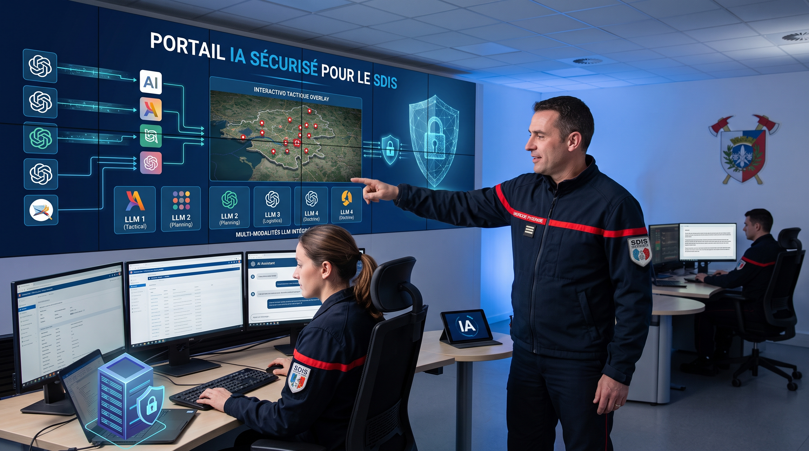
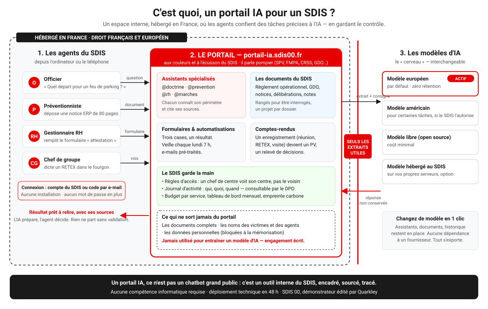

Un portail IA, c'est un espace de travail en ligne, sécurisé, où votre SDIS confie certaines tâches précises à l'intelligence artificielle — sans savoir coder, et en gardant le contrôle sur ce qui se passe.
Un collègue toujours disponible, à qui un agent confie une tâche précise — « résume-moi cette note de service », « prépare la grille d'analyse de ce dossier ERP », « rédige un projet de compte-rendu à partir de cet enregistrement » — et qui la fait exactement comme votre SDIS l'a définie, à chaque fois.
Le portail, c'est l'endroit où vivent ces assistants. Vos agents s'y connectent comme sur n'importe quel site, l'IA fait le travail, et ils récupèrent un résultat prêt à valider — pas un logiciel de plus à installer.
Un chatbot généraliste, c'est une conversation libre : la qualité de la réponse dépend de la façon dont on formule la question, et rien ne garantit qu'elle vienne de vos propres documents.
Le portail encadre le travail : chaque assistant (@doctrine, @prevention, @rh, @marches…) connaît son périmètre, cite ses sources dans vos documents à vous (règlement opérationnel, notices, notes de service), et le résultat reste toujours à valider par un agent avant de partir. Fiable et reproductible, plutôt qu'une conversation ouverte.

Poser une question n'est qu'une manière parmi d'autres. La plupart des agents utilisent surtout les quatre suivantes.
À un assistant qui connaît vos documents et cite ses sources. « @doctrine, quel départ type pour un feu de parking souterrain ? »
Voir @doctrine →Une notice ERP, une offre de marché, un courrier reçu, une photo de plan : le portail le lit et prépare l'analyse ou la réponse.
Voir l'analyse d'une notice →Trois cases, un bouton, un résultat. Attestation d'intervention, QCM de FMPA, courrier à un usager. Sans savoir parler à une IA.
Voir les formulaires →Depuis le téléphone : un RETEX dans le fourgon, une réunion de centre, une visite commentée. Le portail rédige le document.
Voir le portail sur le terrain →La veille réglementaire arrive chaque lundi à 7 h, une demande reçue par e-mail est pré-traitée. Personne n'appuie sur rien.
Voir la veille réglementaire →Le portail connaît le vocabulaire du SDIS : les sigles (SPV, PATS, FMPA, CRSS, GDO, CASDIS…), le règlement intérieur, les modèles de courriers, le ton des notes de service. Ce vocabulaire est chargé pendant le déploiement et enrichi ensuite par vos référents. Résultat : les réponses et les documents sont rédigés « comme au SDIS », pas comme dans une entreprise quelconque.
Et tout ce que le portail produit est rangé : chaque compte-rendu, chaque analyse, chaque courrier se retrouve dans un espace unique, classé par étiquette, exportable en Word ou en PDF. On ne perd rien, on retrouve « tous les PV de 2026 » en un clic.
Trois exemples réels, un par pôle métier :
Un officier pose une question de doctrine, @doctrine répond en 10 secondes avec les sources — au lieu de 20 minutes de recherche manuelle.
Voir le cas détaillé →@prevention analyse une notice ERP de 80 pages et génère une grille de conformité en 45 minutes, contre 3h30 à la main.
Voir le cas détaillé →Un enregistrement de CASDIS devient un projet de PV structuré en 24h, au lieu de deux semaines de retranscription.
Voir le cas détaillé →C'est la question qui revient le plus souvent, et elle est légitime : vos documents et vos données ne devraient jamais échapper à votre contrôle. En résumé — hébergement en France, données jamais utilisées pour entraîner les modèles, données personnelles jamais mémorisées, droits d'accès qui suivent la chaîne de commandement, journal d'activité complet. Les réponses détaillées, pour les agents comme pour la direction et le DPD, sont sur la page Questions fréquentes.
30 minutes en visioconférence, portail réel à l'appui — nous identifions ensemble vos deux premiers cas d'usage.